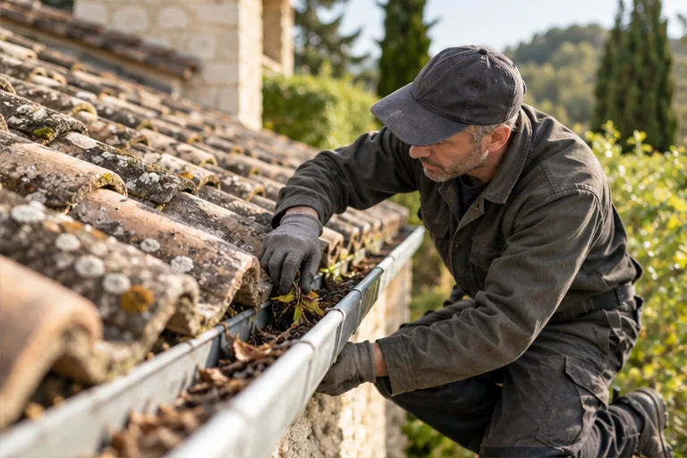
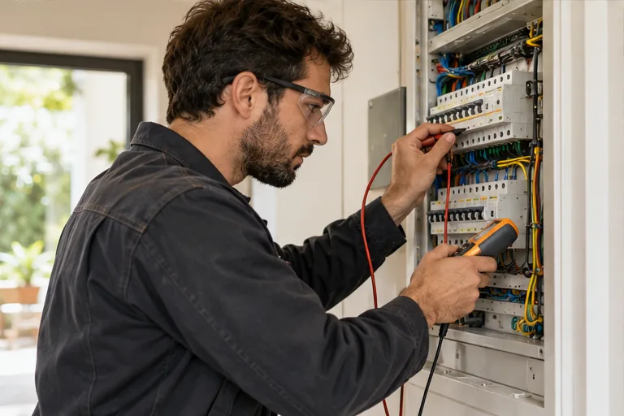
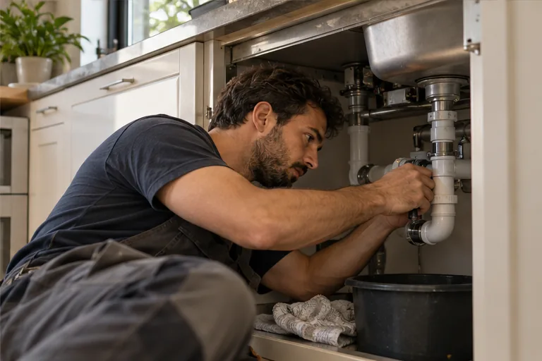

01 / ENERGIA
Instalação solar
Apresente a avaliação do telhado, as etapas de instalação e as informações que ajudam a iniciar um projeto.
Conversar sobre este serviço ↗INSTALAÇÃO · MANUTENÇÃO · REPAROS
Do primeiro contato à etapa final, entenda o que precisa ser feito e converse com quem realiza o trabalho.
O QUE PODEMOS RESOLVER
Uma apresentação organizada ajuda a reconhecer o tipo de serviço, compartilhar detalhes e chegar à conversa com mais contexto.
Apresente a avaliação do telhado, as etapas de instalação e as informações que ajudam a iniciar um projeto.
Conversar sobre este serviço ↗
Mostre opções de manutenção e reparo, com orientação para descrever o local e o que foi observado.
Conversar sobre este serviço ↗
Explique os tipos de instalação atendidos e facilite o envio de uma descrição antes da avaliação.
Conversar sobre este serviço ↗
Reúna pequenos ajustes em um só lugar, com um caminho simples para solicitar orientação.
Conversar sobre este serviço ↗✳ Os serviços desta demonstração são exemplos e podem ser adaptados à atuação real de cada empresa.
UM CAMINHO MAIS CLARO
Informação organizada deixa o primeiro contato mais objetivo e ajuda a alinhar expectativas sobre o serviço.
Iniciar uma conversa ↗Descreva o serviço, o local e os detalhes que já conhece.
A equipe entende o contexto e orienta qual informação é necessária.
Com o escopo mais claro, vocês conversam sobre a execução adequada.
UMA BOA APRESENTAÇÃO
Uma página própria pode reunir o que hoje fica espalhado em mensagens: serviços, região de atendimento, etapas e canais de contato.
ATENDIMENTO LOCAL
Inclua bairros, cidades ou regiões atendidas para que cada pessoa saiba se pode iniciar uma conversa.
DÚVIDAS COMUNS
Não. A pessoa pode explicar o que percebeu e compartilhar o contexto. A equipe orienta a conversa a partir dessas informações.
Sim. A estrutura pode ser adaptada para destacar as especialidades, a região e o processo de cada negócio.
Esta demonstração não envia dados. Em um projeto real, o contato pode ser conectado ao canal definido pela empresa.
PRÓXIMA ETAPA
Conte um pouco sobre o serviço e o local. Esta demonstração mostra como um pedido pode ser organizado.